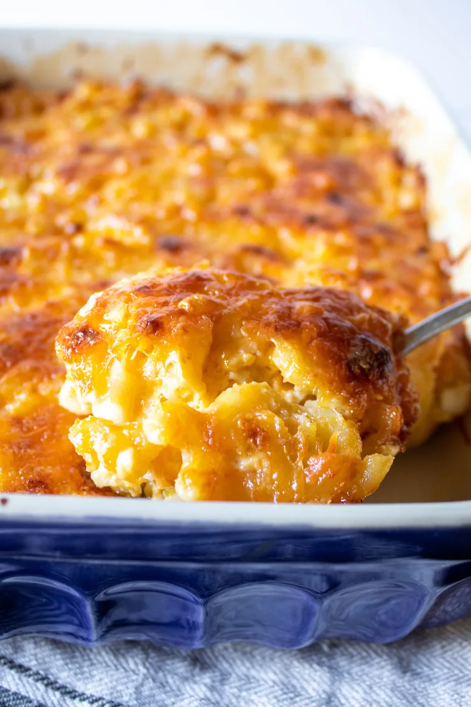

<h1>Southern Style Mac and Cheese</h1>

<h2>Description</h2>
Delicious Southern Style Mac and Cheese
<h3>Ingredients</h3>
<ul>
    <li>3 lbs of elbow macaroni</li>
    <li>salt</li>
    <li>6 lbs of cheddar cheese</li>
    <li>3 can of 12 oz Carnation milk</li>
    <li>2 sticks of butter</li>
    <li>4 eggs</li>
</ul>
<h4>Steps</h4>
<ol>
    <li>Boil a pot of water and salt</li>
    <li>Preheat oven to 350 F</li>
    <li>Boil elbow macaroni pasta al dente</li>
    <li>Shreed cheese</li>
    <li>Combine pasta, cheese, carnation milk, eggs in a bowl.
        <p>Should be able to lift a spoon through the pasta and chesse with little resistance</p>
    </li>
    <li>Add salt to taste</li>
    <li>Place pasta mixture into a deep dish pan</li>
    <Li>Cover with aluminum and bake for 1 hr</Li>
    <li>Remove aluminum and continue to bake until the cheese had browned</li>
    <li>Remove and serve</li>
</ol>